2017年(H29)11月4日 『東慶寺秋のコンサート Finale 室内楽、コントラバス、ヴォイスパフォーマンスの愉しみ』が開催されました。
東慶寺でのコンサートは今回が第16回目ですが、神田会の秋のコンサー トとしては第17回目となります。
文京区シビックホールで第1回目の「お月見コンサート」を開催したのが2001年11月5日。
翌2002年10月20日、東慶寺の井上さんをはじめ多くの皆様のご協力を戴き、東慶寺でコンサートを開催。
それ以降、毎年秋の東慶寺で、藤原清登さんと白川真理さんを中心とした奇跡のような素晴らしい演奏会が行われてきましたが、今回でフィナーレとなりました。
最後ということで、会場は定員オーバーの熱気の中、演奏者の皆さまも熱演していただき、大盛況でした。
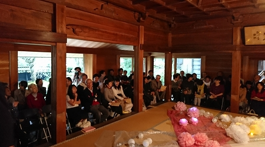
開演前 参加者は90名以上
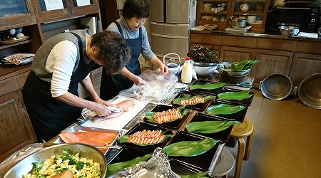
庫裏では食事の準備が進んでいます
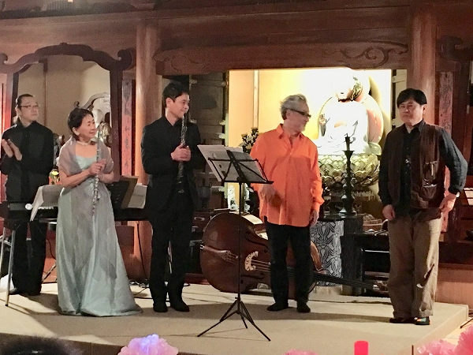
そして、いよいよ開演です
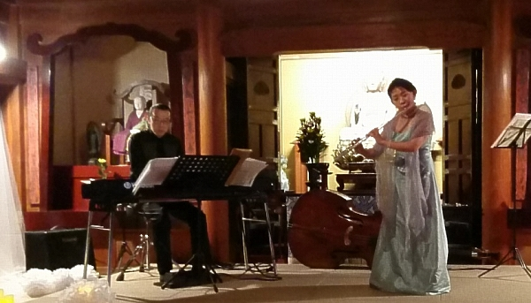
ピアノ 砂原悟さん フルート 白川真理さん
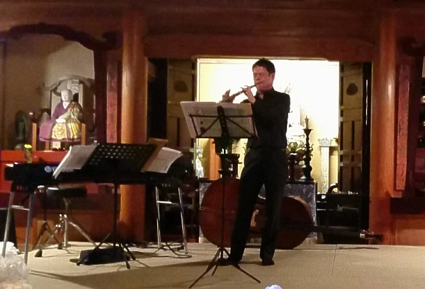
オーボエ 蠣崎耕三さん
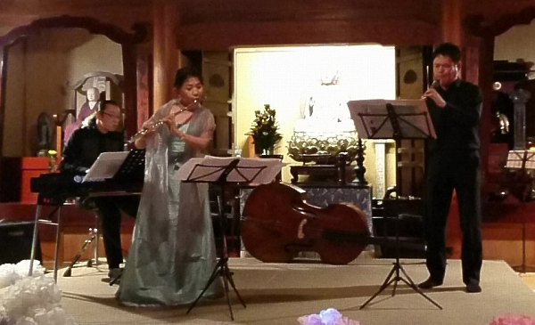
3人はミュンヘン時代の仲間
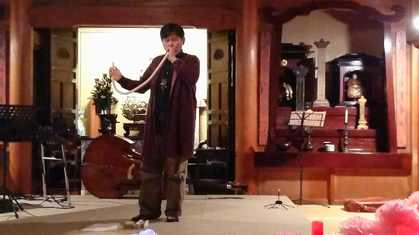
ヴォイスパフォーマー 巻上公一さん
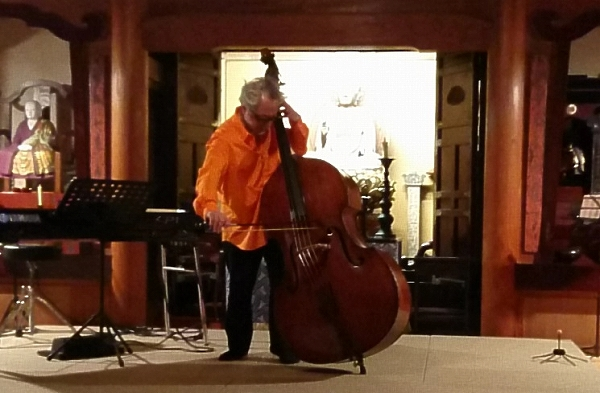
藤原清登さん
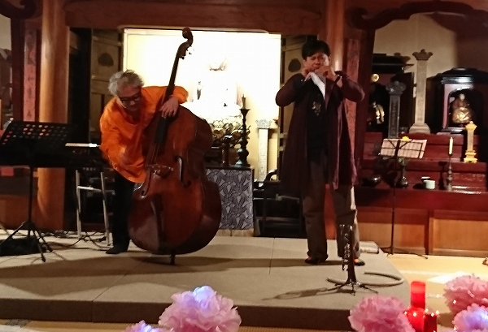
巻上さんの不思議な楽器と、藤原さんのベースとのジャムセッション
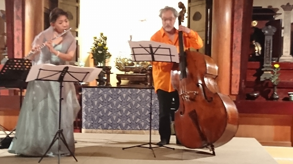
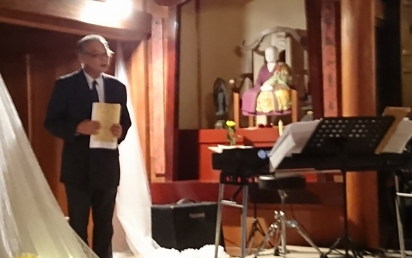
司会の神崎さん(S52卒)
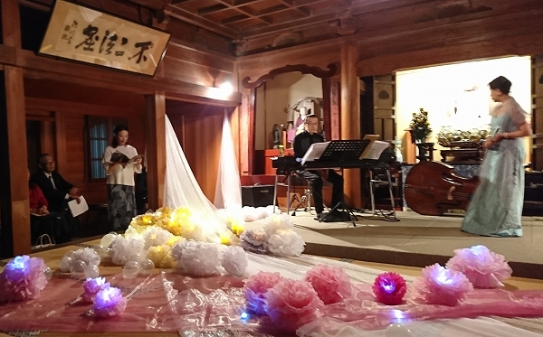
司会と朗読の嶋崎さん(H5卒)
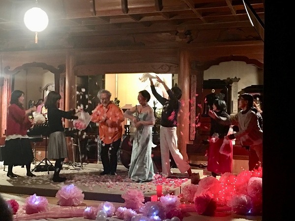
第1回から演奏していただいた藤原さんと白川さんにお礼の紙吹雪
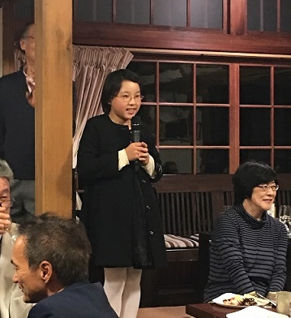
白瀬さん(H5卒)のお嬢さんによる乾杯の挨拶
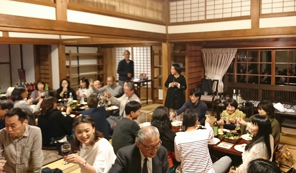
乾杯！！
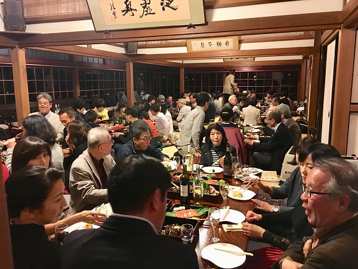
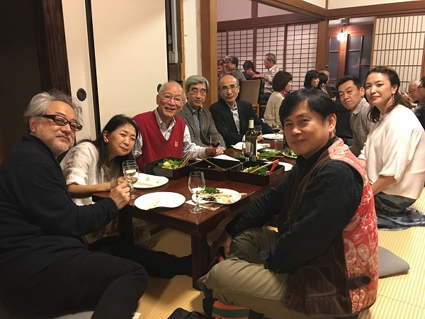
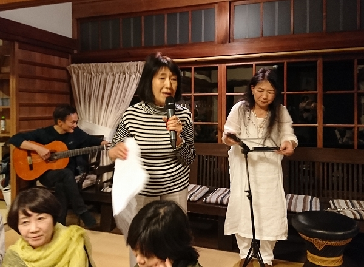
ソプラノ関口玄子さん(S37卒) 関口さんは第3回東慶寺コンサートに出演
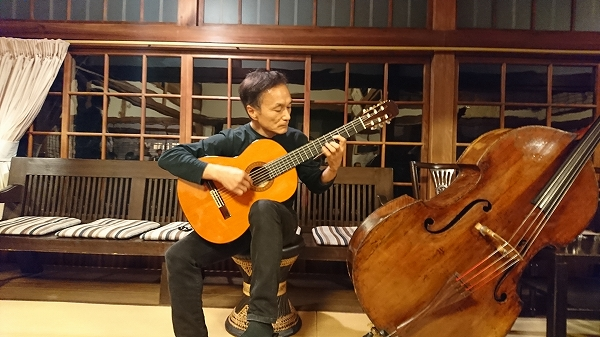
山村雅彦さん(S50卒) 山村さんは第14回東慶寺コンサートに出演
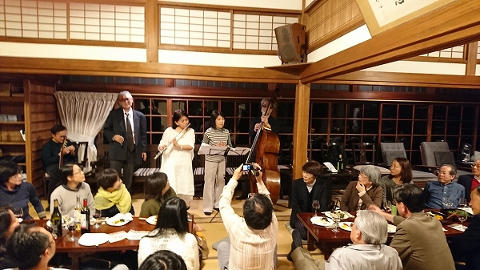
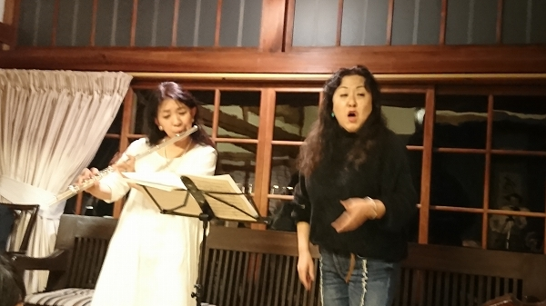
ソプラノ富原淑子さん（S57卒） 富原さんは第7回東慶寺コンサートに出演
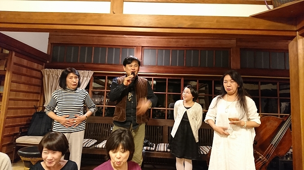
巻上さんによるボイス指導
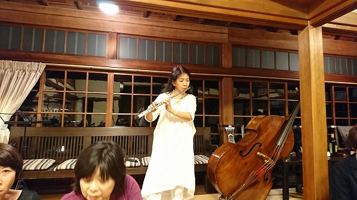
ラストなので、余興でもいつも以上に熱心に演奏していただきました
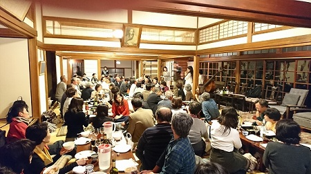
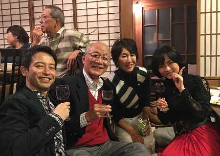
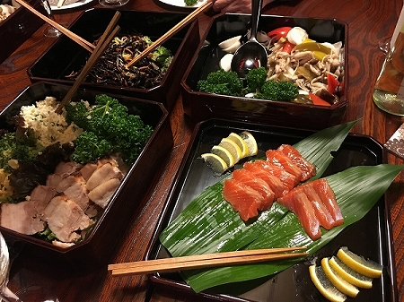
東慶寺で用意していただいた食事 どれもおいしかった(^^♪
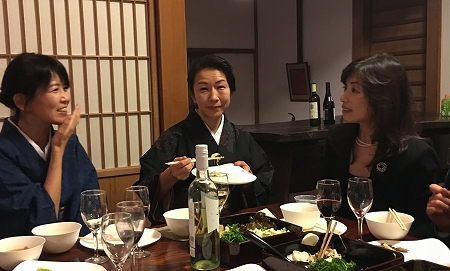
東慶寺には和服が似合います
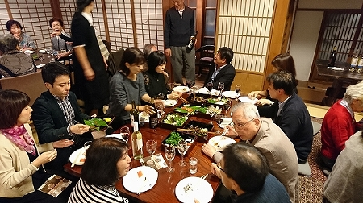
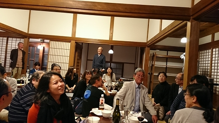
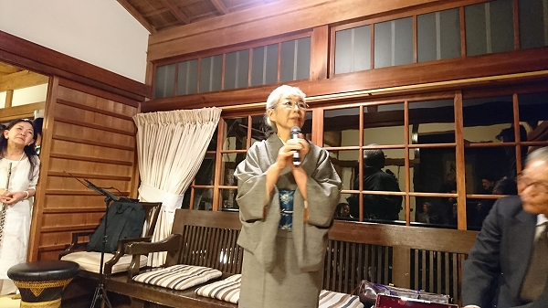
東慶寺前住職の奥さんの井上さん(S45卒)
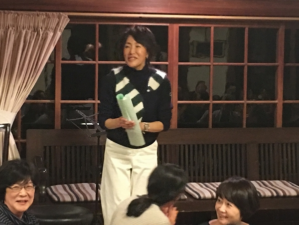
会計と舞台装置を手掛けてくれた長尾さん(S53卒)
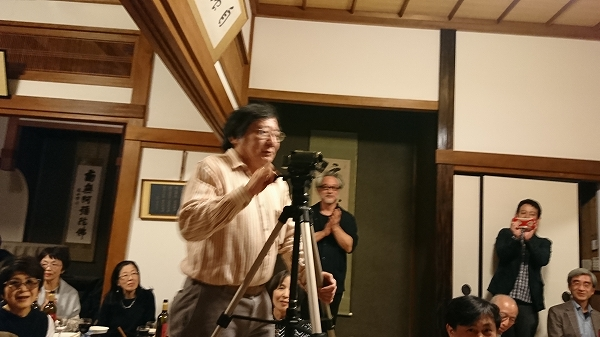
高島監督(S48卒)が高松から駆けつけてくれました
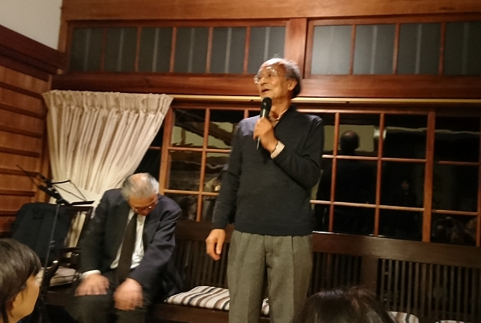
岡崎さん(S37卒)のお礼の挨拶
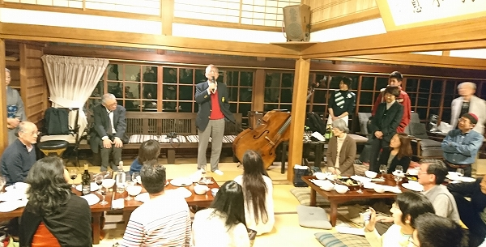
渡辺会長の締めの挨拶 場所を移してのコンサートの継続を強く訴えました
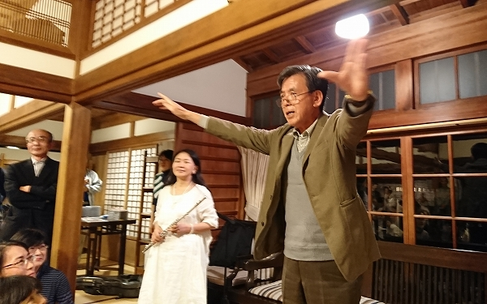
三宅さん(S38卒)によるエールの後、全員で「高高校歌」と「朝日輝く」を斉唱
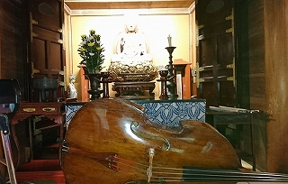
16回続いた東慶寺コンサートもフィナーレ
ありがとうございました。